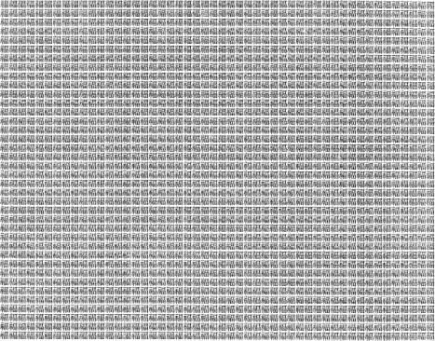

序
2000年，在《数学教育研究》上，有两位数学教育工作者发表了一项调查报告，探讨初中学生对数学家的印象[1]。参与研究计划的初中学生各自画一张数学家的图像，并且回答两个问题，分别是：（1）你认为哪些工作岗位需要聘用数学家？（2）为什么你认为数学家有如你描绘的样子？共有476名初中学生参与研究计划，他们的年龄介乎12至13岁，来自美国、英国、芬兰、瑞典和罗马尼亚。虽然研究者指出学生作答（1）时并非全部只选中学教师为答案，意指他们并非把数学家的工作范围局限于中学的数学教师，但从大部分图像显示出来，初中学生心目中的数学家形象，其实都是来自他们的数学教师。
正因如此，这项调查结果使数学教育界十分担忧。大部分学生都把数学家描绘成令人生厌的闷蛋，甚至是令人害怕的专制独裁者，脾气暴躁，强迫学生做大量他们不感兴趣的习题，但又少作解释。有些学生把数学家描绘成古怪孤僻的人，没有朋友（除了别的同样古怪的数学家！），不修边幅，衣衫褴褛，面容憔悴，愁眉深锁（因为经常思考难题！）。似乎多数人对数学家得来的印象，是他们与别人格格不入，有如生活在另一个世界的怪物。如果学生从小便认为数学家是怪物，他们自然对数学这行业亦畏而远之，不想因为从事这行业而被人视为怪物。于是，不单从事数学工作的生力军数目减少，数学教师的数目也减少，数学教师的素质也因此降低，导致的恶性循环就是学生的数学素质受影响，更少有志者继续进修数学，以致数学这行业将会日渐凋零。证诸数学在现代社会各领域发挥的作用，这绝不是大家愿意见到的现象。
其实，数学家也是凡人一名，与其他人没有分别。很多数学家的行为举止和品格性情与常人无异，既有好人也有不那么好的人，既有正常人也有不那么正常的人；总而言之，数学家并不算是一群特别与其他人非常不同的“怪蛋”，与其他人一样，他们也有喜怒哀乐。但话得说回来，好些数学家由于所受的数学教养熏陶，在工作环境当中培养出来某些习性，又的确与一般人有点分别。20世纪60年代在纽约库朗数学科学研究所任职的数学家卡佩尔（Sylvain Edward Cappell）曾经作了这样的中肯解释：
所有数学家都生活在两个不同的世界里。一个是由完美的理想形式构成的晶莹剔透的世界，一座冰宫。但他们还生活在普通世界里，事物因其发展或转瞬即逝，或朦胧不清。数学家们穿梭于这两个世界，在透明世界里，他们是成人，在现实世界里，他们成了婴儿。
同时，由于数学感觉较敏锐，好些数学家比别人拥有一种“行内幽默感”，却不一定受到其他人即时认同。让我说一则个人的小故事以说明这一点。在2004年除夕，有一位好友寄来贺岁电邮，是一页印得密密麻麻的“福”字，填满了一个矩形框，下面有句祝福语，内容是说送上2 004个“福”以祝安康愉快！我马上回复好友，向他道谢并送上同样的祝福，但不忘加上一句：“非常感谢你的一番心意，不过那儿绝对不会有2 004个‘福’字，不用数也知道！”

我没有仔细数，不知道那矩形框内有多少个“福”字，但我知道2 004＝2×2×3×167是2 004的质因数分解。要把2 004个“福”字恰好放在一个矩形框内，那个矩形框的长和宽必定相差很多（例如12×167，4×501，6×334，等等），矩形必定非常狭长，绝不能有如那种接近方形的样子。
数学家的传记并不缺乏，其中最广为人知的一本是贝尔（Eric Temple Bell）在1932年出版的《大数学家》（Men of Mathematics）。不过这本书得到的评价却是褒贬参半，有不少评论者认为书的内容与史实不符，渲染之余以讹传讹。不过，我们对作者应该持较公平的态度，因为在序言中他已作声明：“本书绝无任何意思作为一本数学史著述，甚至不是数学史的任何片断叙述。”书内讲述多位古往今来的数学大师的生平故事，弥漫着一种浪漫情怀，虽然与史实不一定完全相符，但对读者而言，倒是非常吸引及鼓舞人的。书的数学内容不要求读者懂得很多，几乎不涉及任何技术细节，但又带出数学家学术生涯引人入胜之处，令读者深深感受到数学家驰骋于智性世界的乐趣和激情。当年我在大学一年级暑假借了此书阅读，深受数学学术生涯吸引，日后从事数学工作，此书对我的影响是明显的。
另外一套《数学和数学家的故事》丛书，从20世纪的1978年至1999年陆续出版第一集至第八集，就更为海峡两岸、港澳地区的中学师生熟悉，是不少人从中获益匪浅的数学普及读物。这套丛书影响了一代又一代的师生，丛书的作者用的笔名是“李学数”，真名是李信明。我与信明兄相识于20世纪70年代后期，也算是一段缘分。1975年我回到母校香港大学数学系任教，当时有意多做一些普及数学工作。早在回港任教之前几年，我在美国一所大学任职，课余与在香港的朋友合作为一本中学生杂志的专栏撰稿，写一些介绍数学知识的趣味小品，用的笔名是“萧学算”。回到香港后，在1977年秋季到一所中学以“从圆周率的计算看数学的发展和应用”为题，作了一次讲座。过了不久，在一本香港杂志《广角镜》读到一篇文章，题为“科学上常用的常数——圆周率”[2]，感到很亲切，自然萌生与作者取得联络的念头，好向他请教写作普及数学文章之道。尤其见到作者的名字“李学数”，想起自己用过的笔名，就更有那股意欲了！于是，我写信给《广角镜》，请编辑向作者转交我写给他的信。过了一些时候，我收到信明兄的热情回函，接着大家信来信往，成了好友，过了两年后大家还有机会见面呢。
信明兄的数学普及作品，除了数学内容新颖吸引，使读者在数学方面大有得益以外，他笔下那种感时忧国的人文情怀，更为难得，往往感染了读者，使读者更好明白作为知识分子的责任和说真话的精神。就像在这本书里叙述的数学家的故事，其实每一章都刻画出这些数学家和他们的同伴身处大时代的精神面貌，读者仔细玩味的话，当有所得。
这一点令我想起利伯（Lillian Rosanoff Lieber）在1942年出版的一本很特别的数学读物The Education of T．C．Mits:What Modern Mathematics Means to You，书中主角T．C．Mits其实意指T he C elebrated M an I n T he S treet，即是一般的公民。在第十四章作者写下了这样的一段话[3]：
所以，你看到了，
数学可以启发各色各样的主题，
其中许多人在讨论这些问题时，
都显得油腔滑调、漫不经心，
这是因为他们不曾受过训练，
学习用数学家做研究般的严谨细心
来检视一个想法。
我们必须试着模仿
直线式思维的模型。
不是像假思想家那样
喋喋不休地论辩，
而是
安静的、
诚实的、
谨慎的、
有力量的。
萧文强
2014年1月15日，香港大学
【注释】
[1]Picker S H，Berry J S．Investigating pupils'images of mathematicians．Educational Studies in Mathematics，2000，43（1）：65-94．
[2]广角镜．1978，68（5）：53 59．
[3]莉莉安·利伯．启发每个人的小书．洪万生，英家铭 译．台北：究竟出版社，2012．